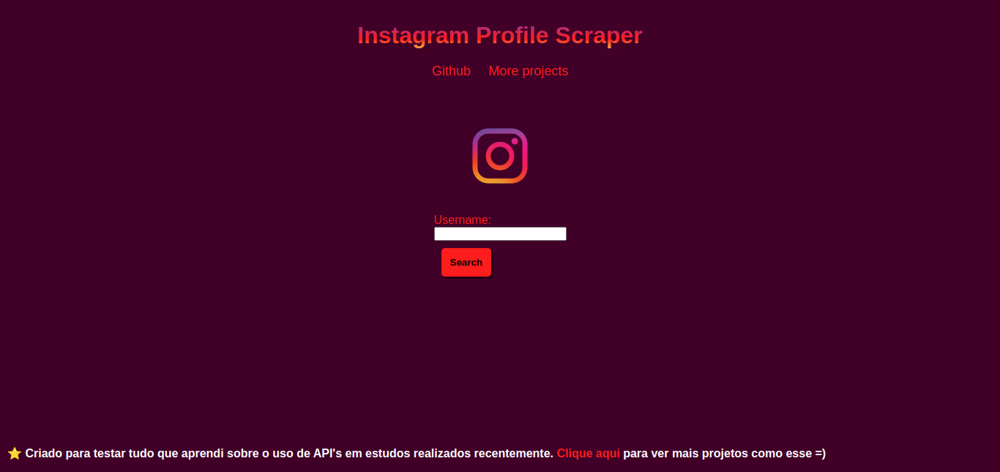

Na criação deste projeto utilizei uma API disponibilizada no site da RapidAPI e alguns conhecimentos básicos em Javascript, além de HTML Semântico e CSS.
Neste projeto, o usuário consegue coletar dados como nome de usuário, biografia, ID, seguidores e outras coisas relacionadas a conta desejada!
